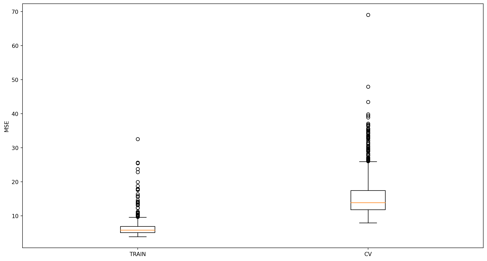

# Import library pengolahan struktur data
import pandas as pd
# Import library pengolahan angka
import numpy as npRegresi Linier dan Teknik Seleksi Peubah - Subset-Selection
MTCARS Dataset
The MTCARS dataset is a well-known dataset in the field of statistics and machine learning. It contains data extracted from the 1974 Motor Trend US magazine, and comprises fuel consumption and 10 aspects of automobile design and performance for 32 automobiles (1973–74 models).
Variables/Columns:
mpg: Miles/(US) galloncyl: Number of cylindersdisp: Displacement (cu.in.)hp: Gross horsepowerdrat: Rear axle ratiowt: Weight (1000 lbs)qsec: 1/4 mile timevs: Engine (0 = V-shaped, 1 = straight)am: Transmission (0 = automatic, 1 = manual)gear: Number of forward gearscarb: Number of carburetors
This dataset is often used for regression analysis and various machine learning tasks to predict the fuel efficiency (mpg) based on the other variables.
mpg adalah ukuran efisiensi bahan bakar dalam mil per galon. Dalam konteks ini, kita akan menggunakan variabel mpg sebagai variabel target (y) dan variabel lainnya sebagai variabel prediktor (x).
Modeling Workflow
1. Import data to Python
2. Data Preprocessing
3. Training a Machine Learning Models
4. Test PredictionImport Data to Python
# Create a function to read the data
def read_data(fname):
data = pd.read_csv(fname)
print('Data shape raw :', data.shape)
print('Number of duplicate :', data.duplicated().sum())
data = data.drop_duplicates()
print('Data shape after dropping :', data.shape)
print('Data shape final :', data.shape)
return data# Read the Uber data
data = read_data(fname='mtcars.csv')
data = data.drop(columns = ["model"])
data.headData shape raw : (32, 12)
Number of duplicate : 0
Data shape after dropping : (32, 12)
Data shape final : (32, 12)<bound method NDFrame.head of mpg cyl disp hp drat wt qsec vs am gear carb
0 21.0 6 160.0 110 3.90 2.620 16.46 0 1 4 4
1 21.0 6 160.0 110 3.90 2.875 17.02 0 1 4 4
2 22.8 4 108.0 93 3.85 2.320 18.61 1 1 4 1
3 21.4 6 258.0 110 3.08 3.215 19.44 1 0 3 1
4 18.7 8 360.0 175 3.15 3.440 17.02 0 0 3 2
5 18.1 6 225.0 105 2.76 3.460 20.22 1 0 3 1
6 14.3 8 360.0 245 3.21 3.570 15.84 0 0 3 4
7 24.4 4 146.7 62 3.69 3.190 20.00 1 0 4 2
8 22.8 4 140.8 95 3.92 3.150 22.90 1 0 4 2
9 19.2 6 167.6 123 3.92 3.440 18.30 1 0 4 4
10 17.8 6 167.6 123 3.92 3.440 18.90 1 0 4 4
11 16.4 8 275.8 180 3.07 4.070 17.40 0 0 3 3
12 17.3 8 275.8 180 3.07 3.730 17.60 0 0 3 3
13 15.2 8 275.8 180 3.07 3.780 18.00 0 0 3 3
14 10.4 8 472.0 205 2.93 5.250 17.98 0 0 3 4
15 10.4 8 460.0 215 3.00 5.424 17.82 0 0 3 4
16 14.7 8 440.0 230 3.23 5.345 17.42 0 0 3 4
17 32.4 4 78.7 66 4.08 2.200 19.47 1 1 4 1
18 30.4 4 75.7 52 4.93 1.615 18.52 1 1 4 2
19 33.9 4 71.1 65 4.22 1.835 19.90 1 1 4 1
20 21.5 4 120.1 97 3.70 2.465 20.01 1 0 3 1
21 15.5 8 318.0 150 2.76 3.520 16.87 0 0 3 2
22 15.2 8 304.0 150 3.15 3.435 17.30 0 0 3 2
23 13.3 8 350.0 245 3.73 3.840 15.41 0 0 3 4
24 19.2 8 400.0 175 3.08 3.845 17.05 0 0 3 2
25 27.3 4 79.0 66 4.08 1.935 18.90 1 1 4 1
26 26.0 4 120.3 91 4.43 2.140 16.70 0 1 5 2
27 30.4 4 95.1 113 3.77 1.513 16.90 1 1 5 2
28 15.8 8 351.0 264 4.22 3.170 14.50 0 1 5 4
29 19.7 6 145.0 175 3.62 2.770 15.50 0 1 5 6
30 15.0 8 301.0 335 3.54 3.570 14.60 0 1 5 8
31 21.4 4 121.0 109 4.11 2.780 18.60 1 1 4 2>Data Preprocessing
# Buat input & output
def split_input_output(data, target_column):
X = data.drop(columns = target_column)
y = data[target_column]
return X, y
X, y = split_input_output(data = data,
target_column = "mpg")# Split train & test
from sklearn.model_selection import train_test_split
X_train, X_test, y_train, y_test = train_test_split(X,
y,
test_size = 0.2,
random_state = 123)
X_train.head() | cyl | disp | hp | drat | wt | qsec | vs | am | gear | carb | |
|---|---|---|---|---|---|---|---|---|---|---|
| 21 | 8 | 318.0 | 150 | 2.76 | 3.520 | 16.87 | 0 | 0 | 3 | 2 |
| 11 | 8 | 275.8 | 180 | 3.07 | 4.070 | 17.40 | 0 | 0 | 3 | 3 |
| 23 | 8 | 350.0 | 245 | 3.73 | 3.840 | 15.41 | 0 | 0 | 3 | 4 |
| 18 | 4 | 75.7 | 52 | 4.93 | 1.615 | 18.52 | 1 | 1 | 4 | 2 |
| 4 | 8 | 360.0 | 175 | 3.15 | 3.440 | 17.02 | 0 | 0 | 3 | 2 |
### Data Preprocessing
X_train.isnull().sum()cyl 0
disp 0
hp 0
drat 0
wt 0
qsec 0
vs 0
am 0
gear 0
carb 0
dtype: int64Training a Machine Learning Models - Linear Regression
from sklearn.dummy import DummyRegressor
# Create object
baseline_model = DummyRegressor(strategy='mean')
# Fit object
baseline_model.fit(X_train, y_train)
y_train_pred = baseline_model.predict(X_train)
y_train_predarray([19.3, 19.3, 19.3, 19.3, 19.3, 19.3, 19.3, 19.3, 19.3, 19.3, 19.3,
19.3, 19.3, 19.3, 19.3, 19.3, 19.3, 19.3, 19.3, 19.3, 19.3, 19.3,
19.3, 19.3, 19.3])from sklearn.metrics import mean_squared_error
mse_baseline_train = mean_squared_error(y_true = y_train,
y_pred = y_train_pred)
print(mse_baseline_train)37.193599999999996# Lakukan cross validation
from sklearn.model_selection import cross_val_score
scores_baseline = cross_val_score(estimator = baseline_model,
X = X_train,
y = y_train,
cv = 5,
scoring = 'neg_mean_squared_error')
mse_baseline_cv = -np.mean(scores_baseline)
mse_baseline_cv39.23434999999999from sklearn.linear_model import LinearRegression
lr = LinearRegression()
lr.fit(X_train, y_train)LinearRegression()In a Jupyter environment, please rerun this cell to show the HTML representation or trust the notebook.
On GitHub, the HTML representation is unable to render, please try loading this page with nbviewer.org.
LinearRegression()
# Predict y_train
y_train_pred = lr.predict(X_train)
# Cari MSE di data train
mse_lr_train = mean_squared_error(y_true = y_train,
y_pred = y_train_pred)
print(mse_lr_train)3.8855506573917955# Lakukan cross validation
scores_lr = cross_val_score(estimator = lr,
X = X_train,
y = y_train,
cv = 5,
scoring = "neg_mean_squared_error")
mse_lr_cv = -np.mean(scores_lr)
mse_lr_cv23.42111033958928model_summary = pd.DataFrame({"Model Name": ['Baseline', 'LinearRegression'],
"Model": [baseline_model, lr],
"MSE Train": [mse_baseline_train, mse_lr_train],
"MSE CV": [mse_baseline_cv, mse_lr_cv]})
model_summary| Model Name | Model | MSE Train | MSE CV | |
|---|---|---|---|---|
| 0 | Baseline | DummyRegressor() | 37.193600 | 39.23435 |
| 1 | LinearRegression | LinearRegression() | 3.885551 | 23.42111 |
Test Prediction
# Cek test scores
y_pred_test = lr.predict(X_test)
# Cari MSE data test
test_score = mean_squared_error(y_true = y_test,
y_pred = y_pred_test)
test_score16.511353509876333# Ekstrak model parameter
coef_ = lr.coef_
intercept_ = lr.intercept_
lr_params = np.append(coef_, intercept_)
lr_params = pd.DataFrame(lr_params,
index = list(X_train.columns) + ["constant"],
columns = ["coefficient"])
lr_params| coefficient | |
|---|---|
| cyl | 1.097167 |
| disp | 0.006168 |
| hp | -0.005287 |
| drat | 1.820345 |
| wt | -3.668249 |
| qsec | 2.139810 |
| vs | 0.851392 |
| am | 5.880618 |
| gear | -1.092819 |
| carb | 0.032545 |
| constant | -19.270044 |
def fit_model(estimator, X_train, y_train):
"""Fungsi untuk fitting model"""
# 1. Fitting model
estimator.fit(X_train, y_train)
# 2. Cari evaluasi di data train & valid
y_pred_train = estimator.predict(X_train)
train_score = mean_squared_error(y_true = y_train,
y_pred = y_pred_train)
valid_scores = cross_val_score(estimator = estimator,
X = X_train,
y = y_train,
cv = 5,
scoring = 'neg_mean_squared_error')
cv_score = -np.mean(valid_scores)
# 3. Ekstrak coefficient
coef_ = estimator.coef_
intercept_ = estimator.intercept_
estimator_params = np.append(coef_, intercept_)
estimator_params_df = pd.DataFrame(estimator_params,
index = list(X_train.columns) + ["constant"],
columns = ["coefficient"])
return estimator, train_score, cv_score, estimator_params_dfTanda negatif (-) digunakan karena Scikit-Learn mengembalikan error dalam bentuk negatif untuk menjaga konsistensi dengan metrik lain (di mana nilai lebih tinggi lebih baik). Oleh karena itu, kita harus mengalikannya dengan -1 agar mendapatkan nilai MSE dalam bentuk yang benar (positif).
from sklearn.linear_model import LinearRegression
lr, train_score, cv_score, lr_params_df = fit_model(estimator = LinearRegression(),
X_train = X_train,
y_train = y_train)
print(f"train score: {train_score:.3f}, cv score: {cv_score:.3f}")train score: 3.886, cv score: 23.421Subset Selection
import statsmodels.api as sm
from itertools import combinationscolumn_list = list(X_train.columns)
n_column = len(column_list)
column_list['cyl', 'disp', 'hp', 'drat', 'wt', 'qsec', 'vs', 'am', 'gear', 'carb']train_column_list = []
for i in range(n_column):
list_of_combination = combinations(column_list, i)
for combi in list_of_combination:
train_column_list.append(list(combi))
# tambahkan seluruh kolom
train_column_list.append(column_list)len(train_column_list)1024idx = 95
train_list_idx = train_column_list[idx]
train_list_idx['disp', 'hp', 'vs']train_score = []
cv_score = []
for idx in range(len(train_column_list)):
if idx != 0:
# Filter data
train_list_idx = train_column_list[idx]
X_train_idx = X_train[train_list_idx]
# Buat model
_, train_idx, cv_idx, _ = fit_model(estimator = LinearRegression(),
X_train = X_train_idx,
y_train = y_train)
# Simpan hasil
train_score.append(train_idx)
cv_score.append(cv_idx)import matplotlib.pyplot as plt
# Plot hasil
fig, ax = plt.subplots(nrows=1, ncols=1, figsize=(15, 8))
ax.boxplot([train_score, cv_score])
ax.set_xticklabels(["TRAIN", "CV"])
ax.set_ylabel("MSE")
plt.show()
# Cari best di data validasi
best_score = np.min(cv_score)
best_idx = np.argmin(cv_score)
best_idx, best_score(477, 7.989577252522926)# Best features
train_column_list[best_idx + 1]['cyl', 'drat', 'wt', 'qsec', 'am']# Find model
lr_best, train_best_score, \
cv_best_score, lr_params_best = fit_model(estimator = LinearRegression(),
X_train = X_train[train_column_list[best_idx+1]],
y_train = y_train)
print('Train score :', train_best_score)
print('CV score :', cv_best_score)Train score : 4.113333306973907
CV score : 7.989577252522926lr_params_best| coefficient | |
|---|---|
| cyl | 1.282553 |
| drat | 1.639653 |
| wt | -3.579665 |
| qsec | 2.539308 |
| am | 4.763395 |
| constant | -29.508518 |
Test Prediction
# Cek test scores
y_pred_test = lr_best.predict(X_test[train_column_list[best_idx+1]])
# Cari MSE data test
test_score = mean_squared_error(y_true = y_test,
y_pred = y_pred_test)
test_score17.675913225570763Conclusion
best_scores_df = pd.DataFrame({"Model": ["Baseline", "OLS full features", "OLS best features"],
"CV Scores": [mse_baseline_cv, mse_lr_cv, cv_best_score]})
best_scores_df| Model | CV Scores | |
|---|---|---|
| 0 | Baseline | 39.234350 |
| 1 | OLS full features | 23.421110 |
| 2 | OLS best features | 7.989577 |
Sedikit lebih besar dibandingkan dengan model OLS full features. Mana yang lebih baik? Tentu saja, kita harus melihat trade-off antara kompleksitas model dan performa. Jika performa model tidak meningkat secara signifikan, kita mungkin lebih memilih model yang lebih sederhana.
Ingat trade-off antara bias dan varians!